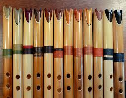
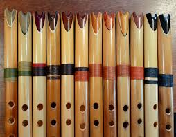

Quenas Artesanales
 

La quena, instrumento musical milenario originario de la región andina, elaborado ahora en nuestros talleres.
Información del Producto
Quenas elaboradas a base de un selecto bambú que ha sido cuidado y cortado según técnicas ancestrales, para luego ser procesado cuidadosamente a fin de obtener un perfecto secado que ayude a producir un mejor sonido.
Nuestras quenas se afinan perfectamente a 440 Hz y en la escala de sol mayor, que es la afinación estandarizada para la música andina.
Todo el proceso de eleboración de nuestras quenas, es artesanal, a fin de producir instrumentos musicales de la más alta calidad.